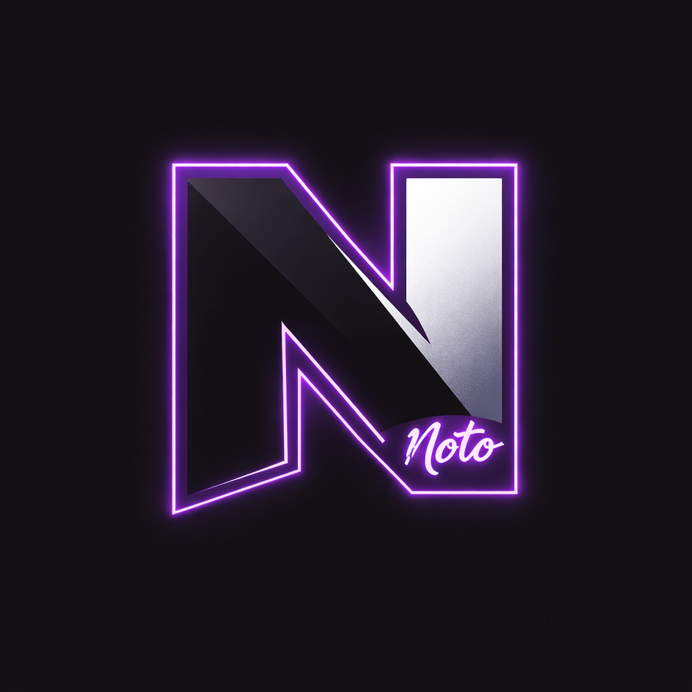

NOTO
GTA V • Faille • Flashback WL

Retrouve ici les dernières aventures de Léon Russel sur Flashback WL.
Leon Russell est le chef des Black Hustler. Avec sa sœur Inaya, son oncle Romelo et son cousin Marlo, il veut bâtir une communauté afro-américaine forte. Ancien homme dangereux à Los Santos, Romelo l’envoie à North Yankton pour le remettre dans le droit chemin. Mais les flics ne veulent pas d’eux là-bas. Après un dérapage, ils reviennent 6 mois plus tard, prêts à reprendre les affaires.
À venir...
À venir...
"À venir..."
 Twitch
Twitch
 Discord
Discord
 YouTube
YouTube
 Instagram
Instagram
 Spotify
Spotify